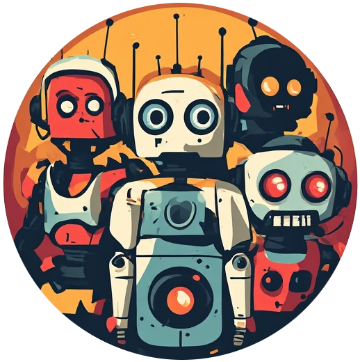

Create named agents, each running in its own project directory with its own tools, skills, and MCP servers. Chat with one or many at once, watch them work in real time, and let them delegate to each other — like a team channel, except every member can actually get things done.
Why Clauhort
Every agent in a Clauhort chat is a genuine, unrestricted Claude Code CLI process — the same tool you'd run in a terminal, just given a seat in a group chat.
Each agent runs against its own working directory with its own real tools, skills, and MCP servers — nothing stripped down or simulated for the chat UI.
@mention a specific agent, or let its reply @mention a teammate to bring them in — with loop protection built in so delegation can't run away on you.
Tool calls, background tasks, and streamed replies all show up live, with real status ("reading a file", "running a command") instead of a spinner.
Every risky tool call surfaces a grant/deny card before it runs — or opt an individual agent into YOLO mode when you trust it completely.
What it offers
A complete rundown of what's in the app today.
Group any number of agents into one conversation. An agent belongs to at most one chat at a time — remove it to free it up for another.
Address a specific agent, or send with no mention to broadcast to everyone in the chat at once.
An agent's reply can @mention a teammate to delegate. Bounded to one hop by default; toggle Free Relay to lift the cap.
Invoke an agent's actual Claude Code skills with @Name /command — read straight from its live process, autocomplete included.
Focus a busy chat on one agent's relevant messages only; a quiet blue dot flags replies you'd otherwise miss elsewhere.
An agent that only speaks up when explicitly @mentioned, catching up on the full chat history instead of the recent window.
Grant or deny file and command access per tool call, with scoped patterns — or skip checks entirely with per-agent YOLO mode.
Queue a message for later; an auto-continue toggle re-arms itself automatically after a session-limit reset.
Long chats split into forum-style pages instead of one endless scroll, with full-text search across the whole history.
Grant an agent real control of your Chrome browser via the Claude in Chrome extension — any number of agents at once.
Each agent keeps one continuous native Claude session, auto-chained across turns — copy claude --resume <id> to pick it up in a terminal.
Rename chats in place, delete a chat with an option to clean up its agents too, and browse or search everything after the fact.
How it works
The mental model is closer to Slack than to a chatbot widget — the difference is that every participant can actually do the work.
Give it a name and point it at a real project directory on disk — that directory is its working scope, the same as if you'd run claude there yourself.
One agent, or several — mix agents from different projects in the same conversation if the work spans more than one codebase.
@Name to address someone specific, or send with no mention to broadcast to every non-observer agent in the chat.
Streamed replies, real tool-call status, and inline permission prompts — a denied tool call surfaces a Grant/Deny card without breaking the conversation.
Any agent's reply can @mention a teammate to pull them into the thread — useful for splitting a task across agents scoped to different parts of a project.
claude --print --input-format=stream-json --output-format=stream-json
process kept alive across turns, not a fresh spawn per message — so MCP servers and other expensive-to-establish state survive
between messages instead of reconnecting every time. Prompts are built narrowly per turn (only what an agent doesn't already have
in its own session memory), since the CLI already remembers its own conversation.
See it in action
Each clip below is a real session captured with rrweb against a live instance of the app — real agents, real replies — then replayed here. Pick a use case to load it.
Pick a use case above to load its recording.
GitHub Pages can only serve static files — Clauhort itself needs a live Node/WebSocket server, so this page shows recordings rather than the running app. Run it yourself below to try the real thing.
Get started
No build step, no framework, no native compile toolchain required.
| Requirement | Details |
|---|---|
| Node.js | 22.13+ (needed for node:sqlite without a flag — see .nvmrc) |
| Claude Code CLI | Installed, authenticated, and on PATH as claude |
| OS | Linux, macOS, or Windows — developed and tested on Linux |
# clone, install, run git clone https://github.com/Bwca/app_clauhort.git cd app_clauhort/server npm install node index.js # then open http://localhost:3001
See the full README for environment variables, E2E tests, and every agent-creation option, or the changelog for release history.
claude CLI — Anthropic's own tool, installed and authenticated by you, independently of Clauhort — and every file edit, shell command, or browser action is carried out by that CLI process under its own permission model. Clauhort only launches it, relays messages to it, and displays what it reports back, including its own permission prompts, which you still review and approve yourself. You're solely responsible for what you authorize the CLI to do.